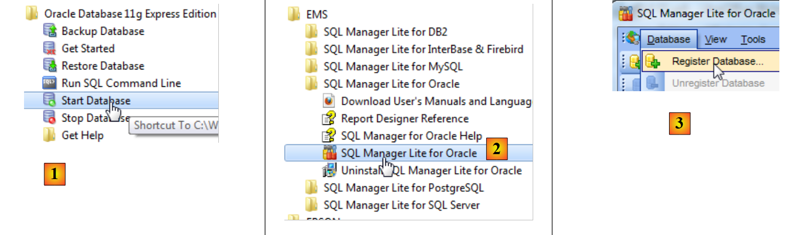
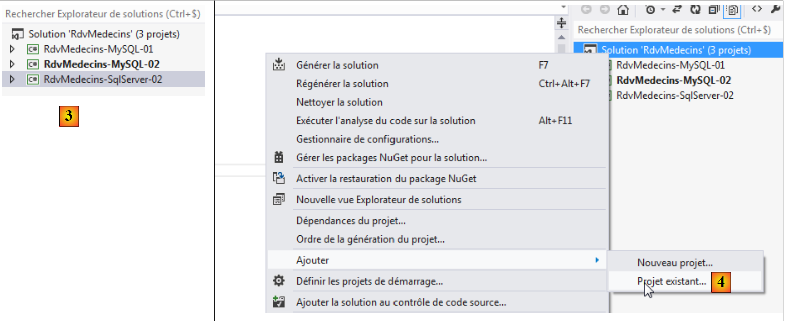
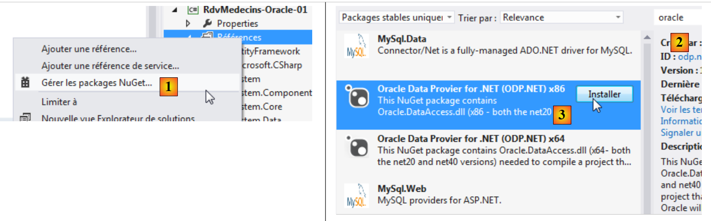

5. Caso práctico con Oracle Database Express Edition 11g Release 2
5.1. Instalación de las herramientas
Las herramientas que hay que instalar son las siguientes:
- SGBD: [http://www.oracle.com/technetwork/products/express-edition/downloads/index.html];
- una herramienta de administración: EMS SQL Manager for Oracle Freeware [http://www.sqlmanager.net/fr/products/oracle/manager/download];
- un cliente Oracle para .NET: ODAC 11.2 Release 5 (11.2.0.3.20) con Oracle Developer Tools para Visual Studio: [http://www.oracle.com/technetwork/developer-tools/visual-studio/downloads/index.html].
En los siguientes ejemplos, el usuario system tiene la contraseña system.
Iniciamos Oracle [1] y, a continuación, la herramienta [SQL Manager Lite for Oracle], con la que administraremos SGBD y [2].
 |
- En [3], nos conectamos a una base de datos existente;
 |
- en [4], utilizamos el servicio Oracle XE para conectarnos;
- en [5], se indica el nombre de la base de datos XE;
- en [6], nos conectamos como system / system;
- en [7], se cierra el asistente;
 |
- en [8], se conecta a la base de datos;
- en [9], estamos conectados;
- como nos hemos conectado como el usuario system / system, que tiene derechos ampliados, podremos, por ejemplo, gestionar los usuarios [10];
 |
- en [11], creamos un nuevo usuario;
- en [12], se llamará [RDVMEDECINS-EF];
- en [13], y tendrá la contraseña rdvmedecins;
- en [14], se valida la creación del usuario;
- en [15], el usuario ha sido creado;
 |
- en [16], el usuario [RDVMEDECINS-EF] es también un esquema de base de datos;
- en [17], el usuario tal y como se ha creado no tiene suficientes derechos. Se le conceden mediante un script SQL;
 |
- en [18], el script ejecutado;
- en [19], intentaremos conectarnos con la identidad de [RDVMEDECINS-EF] para ver qué puede hacer. Para ello, empezamos por registrar una nueva base de datos en [EMS Manager];
 |
- en [19], nos conectamos a través del servicio XE;
- en [20], nos conectamos con la identidad RDVMEDECINS-EF / rdvmedecins;
- en [21], se proporciona un alias que refleja el nombre del usuario conectado;
- en [22], se inicia sesión en Oracle con los datos proporcionados;
 |
 |
- en [22], se ha logrado iniciar sesión;
- en [23], se intenta crear una tabla en el esquema [RDVMEDECINS-EF];
- en [24], se define una tabla cualquiera;
- en [25], se valida su definición;
 |
- en [26], la tabla se ha creado. Se elimina;
- en [27], se ha eliminado.
Ahora que tenemos un usuario con los derechos suficientes, vamos a crear el proyecto VS 2012, que creará las tablas del esquema [RDVMEDECINS-EF] a partir de la definición de las entidades.
5.2. Creación de la base de datos a partir de las entidades
Comenzamos duplicando la carpeta del proyecto [RdvMedecins-SqlServer-01] en [RdvMedecins-Oracle-01] [1]:
 |
- en [2], en VS 2012, eliminamos el proyecto [RdvMedecins-SqlServer-01] de la solución;
 |
- en [3], el proyecto se ha eliminado;
- en [4], añadimos otro. Este se encuentra en la carpeta [RdvMedecins-Oracle-01] que hemos creado anteriormente;
 |
- en [5], el proyecto cargado se llama [RdvMedecins-SqlServer-01];
- en [6], cambiamos su nombre a [RdvMedecins-Oracle-01]
 |
- en [7], añadimos otro proyecto a la solución. Este se encuentra en la carpeta [RdvMedecins-SqlServer-01] del proyecto que hemos eliminado de la solución anteriormente;
- en [8], el proyecto [RdvMedecins-SqlServer-01] se ha reintegrado a la solución.
El proyecto [RdvMedecins-Oracle-01] es idéntico al proyecto [RdvMedecins-SqlServer-01]. Tenemos que realizar algunas modificaciones. En [App.config], vamos a modificar la cadena de conexión y el [DbProviderFactory], que debemos adaptar a cada SGBD.
<!-- cadena de conexión en la base -->
<connectionStrings>
<add name="monContexte" connectionString="Data Source=(DESCRIPTION=(ADDRESS_LIST=(ADDRESS=(PROTOCOL=TCP)(HOST=localhost)(PORT=1521)))(CONNECT_DATA=(SERVER=DEDICATED)(SERVICE_NAME=XE)));User Id=RDVMEDECINS-EF;Password=rdvmedecins;" providerName="Oracle.DataAccess.Client" />
</connectionStrings>
<!-- el proveedor de la fábrica -->
<system.data>
<DbProviderFactories>
<remove invariant="Oracle.DataAccess.Client" />
<add name="Oracle Data Provider for .NET" invariant="Oracle.DataAccess.Client" description="Oracle Data Provider for .NET" type="Oracle.DataAccess.Client.OracleClientFactory, Oracle.DataAccess, Version=4.112.3.0, Culture=neutral, PublicKeyToken=89b483f429c47342" />
</DbProviderFactories>
</system.data>
- línea 3: el usuario y su contraseña;
- líneas 6-11: el DbProviderFactory. La línea 9 hace referencia a un DLL [Oracle.DataAccess] que no tenemos. Lo obtenemos con NuGet [1]:
 |
- en [2], en el campo de búsqueda se escribe la palabra clave «oracle»;
- en [3], se elige el paquete [Oracle Data Provider] adecuado. Es el conector ADO.NET de Oracle;
 |
- en [4], la referencia añadida;
- en [5], en [App.config], hay que poner el version correcto del DLL. Se encuentra en sus propiedades.
En el archivo [Entites.cs], hay que adaptar el esquema de las tablas que se van a generar. El esquema utilizado es el nombre del usuario propietario de las tablas.
[Table("MEDECINS", Schema = "RDVMEDECINS-EF")]
public class Medecin : Personne
{...}
[Table("CLIENTS", Schema = "RDVMEDECINS-EF")]
public class Client : Personne
{...}
[Table("RVS", Schema = "RDVMEDECINS-EF")]
public class Rv
{...}
[Table("CRENEAUX", Schema = "RDVMEDECINS-EF")]
public class Creneau
{...}
Configuramos la ejecución del proyecto:
 |
- en [1], le damos otro nombre al ensamblado que se va a generar;
- en [2], así como otro espacio de nombres por defecto;
- en [3], se designa el programa que se va a ejecutar.
En este punto, no hay errores de compilación. Ejecutemos el programa [CreateDB_01]. Se produce la siguiente excepción:
Recordamos haber tenido el mismo error con MySQL. Está relacionado con el tipo del campo Timestamp de las entidades. Realizamos la misma modificación. En las entidades, sustituimos las tres líneas
[Column("TIMESTAMP")]
[Timestamp]
public byte[] Timestamp { get; set; }
por las siguientes:
[ConcurrencyCheck]
[Column("VERSIONING")]
public int? Versioning { get; set; }
Por lo tanto, cambiamos el tipo de la columna, que pasa de byte[] a int?. Recordemos que, tanto en SQL Server como en MySQL, la columna de las tablas que se utilizaba para gestionar la concurrencia de acceso recibía un valor de SGBD cada vez que se insertaba o modificaba una fila. A partir de ahora, vamos a utilizar un campo de entidad que será un entero. En SGBD, utilizaremos procedimientos almacenados para incrementar este entero en una unidad cada vez que se inserte o modifique una línea.
Realizamos la modificación anterior en las cuatro entidades y, a continuación, volvemos a ejecutar la aplicación. Entonces obtenemos el siguiente error:
La línea 1 indica que el conector ADO.NET de Oracle no es capaz de eliminar la base de datos existente. Recordemos lo que ocurre. El código de [CreateDB_01.cs] es el siguiente:
using System;
using System.Data.Entity;
using RdvMedecins.Models;
namespace RdvMedecins_01
{
class CreateDB_01
{
static void Main(string[] args)
{
// crear la base de datos
Database.SetInitializer(new RdvMedecinsInitializer());
using (var context = new RdvMedecinsContext())
{
context.Database.Initialize(false);
}
}
}
}
La línea 15 inicia la ejecución de la clase [RdvMedecinsInitializer] (línea 12). Esta es la siguiente:
public class RdvMedecinsInitializer : DropCreateDatabaseAlways<RdvMedecinsContext>
Deriva de la clase [DropCreateDatabaseAlways], que intenta eliminar y volver a crear la base de datos. Cambiamos la definición de la clase por:
public class RdvMedecinsInitializer : CreateDatabaseIfNotExists<RdvMedecinsContext>
La base de datos solo se crea si no existe. Volvemos a ejecutar [CreateDB_01.cs] y ya no hay errores. Pero en [EMS Manager], observamos que la base de datos [RDVMEDECINS-EF] ha quedado vacía. Como EF 5 ha encontrado una base de datos existente, no ha hecho nada. Solo actúa si la base de datos no existe. A partir de ahí, estamos dando vueltas en círculo. De hecho, la cadena de conexión a SGBD es la siguiente:
<connectionStrings>
<add name="monContexte" connectionString="Data Source=(DESCRIPTION=(ADDRESS_LIST=(ADDRESS=(PROTOCOL=TCP)(HOST=localhost)(PORT=1521)))(CONNECT_DATA=(SERVER=DEDICATED)(SERVICE_NAME=XE)));User Id=RDVMEDECINS-EF;Password=rdvmedecins;" providerName="Oracle.DataAccess.Client" />
</connectionStrings>
En la línea 2, la cadena de conexión no utiliza el nombre de una base de datos, sino el nombre de un usuario. Este debe existir.
Por lo tanto, debemos crear manualmente la base de datos [RDVMEDECINS-EF] con la herramienta [EMS Manager for Oracle]. No describiremos todos los pasos, sino solo los más importantes.
La base de datos Oracle será la siguiente:
Las tablas
 |
Las diferentes tablas tienen las claves primarias y externas que tenían estas mismas tablas en los dos ejemplos anteriores. Las claves externas tienen, en particular, el atributo ON DELETE CASCADE.
Las secuencias
Aquí se han creado secuencias de Oracle. Son generadores de números consecutivos. Hay 5: [1].
 |
- En [2], vemos las propiedades de la secuencia [SEQUENCE_CLIENTS]. Genera números consecutivos con un incremento de 1, desde el 1 hasta un valor muy grande.
Todas las secuencias se construyen siguiendo el mismo modelo.
- [SEQUENCE_CLIENTS] se utilizará para generar la clave primaria de la tabla [CLIENTS];
- [SEQUENCE_MEDECINS] se utilizará para generar la clave primaria de la tabla [MEDECINS];
- [SEQUENCE_CRENEAUX] se utilizará para generar la clave primaria de la tabla [CRENEAUX];
- [SEQUENCE_RVS] se utilizará para generar la clave primaria de la tabla [RVS];
- [SEQUENCE_VERSIONS] se utilizará para generar los valores de las columnas [VERSIONING] de todas las tablas.
Los disparadores
Un disparador es un procedimiento ejecutado por SGBD antes o después de un evento (Inserción, Modificación, Eliminación) en una tabla. Tenemos 8 [1]:
 |
Veamos el código DDL del disparador [TRIGGER_PK_CLIENTS] que alimenta la clave primaria de la tabla [CLIENTS]:
- líneas 1-5: antes de cada operación INSERT en la tabla [CLIENTS];
- línea 6: la columna [ID] tomará el siguiente valor de la secuencia [SEQUENCE_CLIENTS]. De este modo, la clave primaria tendrá valores consecutivos proporcionados por la secuencia.
Los disparadores [TRIGGER_PK_MEDECINS, TRIGGER_PK_CRENEAUX, TRIGGER_PK_RVS] son análogos.
Veamos el código DDL del disparador [TRIGGER_VERSIONS_CLIENTS] que alimenta la columna [VERSIONING] de la tabla [CLIENTS]:
- líneas 1-2: antes de cada operación INSERT o UPDATE en la tabla [CLIENTS];
- línea 8: la columna [VERSIONING] tomará el siguiente valor de la secuencia [SEQUENCE_VERSIONS]. La columna [VERSIONING] tendrá así valores consecutivos proporcionados por la secuencia.
Los disparadores [TRIGGER_VERSION_MEDECINS, TRIGGER_VERSION_CRENEAUX, TRIGGER_VERSION_RVS] son análogos. Las cuatro columnas [VERSIONING] obtienen sus valores de la misma secuencia.
El script de generación de las tablas de la base de datos Oracle [RDVMEDECINS-EF] se ha colocado en la carpeta [RdvMedecins / databases / oracle]. El lector podrá cargarlo y ejecutarlo para crear sus tablas.
Una vez hecho esto, se pueden ejecutar los diferentes programas del proyecto. Dan los mismos resultados que con SQL Server, salvo el programa [ModifyDetachedEntities], que se cuelga por la misma razón por la que se colgaba con MySQL. El problema se resuelve de la misma manera. Basta con copiar el programa [ModifyDetachedEntities] del proyecto [RdvMedecins-MySQL-01] al proyecto [RdvMedecins-Oracle-01]. Entonces surge un nuevo problema:
- líneas 1-4: el cliente desconectado se ha actualizado correctamente;
- línea 6: una excepción conocida. Es la que se produce cuando se intenta modificar una entidad sin tener el version adecuado. Sin embargo, en este caso no se quería modificar, sino eliminar la entidad:
// eliminar entidad fuera de contexto
using (var context = new RdvMedecinsContext())
{
// aquí tenemos un nuevo contexto vacío
// ponemos al cliente1 en el contexto en estado borrado
context.Entry(client1).State = EntityState.Deleted;
// guardar el contexto
context.SaveChanges();
}
EF 5 se negó a eliminar «client1» de la base de datos, ya que «client1» (línea 6) no tenía el mismo version. No habíamos tenido este problema con MySQL. Poco a poco nos damos cuenta de que los conectores ADO.NET de diferentes SGBD presentan ligeras diferencias. Lo corregimos de la siguiente manera:
using (var context = new RdvMedecinsContext())
{
// aquí tenemos un nuevo contexto vacío
// poner cliente1 en el contexto para borrarlo
context.Clients.Remove(context.Clients.Find(client1.Id));
// guardar el contexto
context.SaveChanges();
}
y funciona.
5.3. Arquitectura multicapa basada en EF 5
Volvemos a nuestro caso práctico descrito en el apartado 2, página 7.
 |
Vamos a empezar por construir la capa [DAO] de acceso a los datos. Para ello, duplicamos el proyecto de consola VS 2012 [RdvMedecins-SqlServer-02] en [RdvMedecins-Oracle-02] [1]:
 |
- en [2], eliminamos el proyecto [RdvMedecins-SqlServer-02];
 |
- en [3], se añade un proyecto existente a la solución. Se toma de la carpeta [RdvMedecins-Oracle-02] que se acaba de crear;
- en [4], el nuevo proyecto lleva el nombre del que se ha eliminado. Vamos a cambiarle el nombre;
 |
- en [5], hemos cambiado el nombre del proyecto;
- en [6], modificamos algunas de sus propiedades, como en este caso el nombre del ensamblado;
- en [7], se elimina la carpeta [Models] para sustituirla por la carpeta [Models] del proyecto [RdvMedecins-Oracle-01]. De hecho, ambos proyectos comparten las mismas plantillas.
 |
- en [8], las referencias actuales del proyecto;
- en [9], se ha añadido el conector ADO.NET de Oracle con la herramienta NuGet.
En el archivo [App.config], se sustituye la información de la base SQL Server por la de la base Oracle. Se encuentra en el archivo [App.config] del proyecto [RdvMedecins-Oracle-01]:
<!-- cadena de conexión en la base -->
<connectionStrings>
<add name="monContexte" connectionString="Data Source=(DESCRIPTION=(ADDRESS_LIST=(ADDRESS=(PROTOCOL=TCP)(HOST=localhost)(PORT=1521)))(CONNECT_DATA=(SERVER=DEDICATED)(SERVICE_NAME=XE)));User Id=RDVMEDECINS-EF;Password=rdvmedecins;" providerName="Oracle.DataAccess.Client" />
</connectionStrings>
<!-- el proveedor de la fábrica -->
<system.data>
<DbProviderFactories>
<remove invariant="Oracle.DataAccess.Client" />
<add name="Oracle Data Provider for .NET" invariant="Oracle.DataAccess.Client" description="Oracle Data Provider for .NET" type="Oracle.DataAccess.Client.OracleClientFactory, Oracle.DataAccess, Version=4.112.3.0, Culture=neutral, PublicKeyToken=89b483f429c47342" />
</DbProviderFactories>
</system.data>
Los objetos gestionados por Spring también cambian. Actualmente tenemos:
<!-- configuración de muelles -->
<spring>
<context>
<resource uri="config://spring/objects" />
</context>
<objects xmlns="http://www.springframework.net">
<object id="rdvmedecinsDao" type="RdvMedecins.Dao.Dao,RdvMedecins-SqlServer-02" />
</objects>
</spring>
La línea 7 hace referencia al ensamblado del proyecto [RdvMedecins-SqlServer-02]. El ensamblado es ahora [RdvMedecins-Oracle-02].
Una vez hecho esto, estamos listos para ejecutar la prueba de la capa [DAO]. Antes hay que asegurarse de rellenar la base de datos (programa [Fill] del proyecto [RdvMedecins-Oracle-01]). La prueba se realiza con éxito.
Creamos el DLL del proyecto tal y como se hizo para el proyecto [RdvMedecins-SqlServer-02] y reunimos eltodos los DLL del proyecto en una carpeta [lib] creada en [RdvMedecins-Oracle-02]. Estas serán las referencias del proyecto web [RdvMedecins-Oracle-03] que vendrá a continuación.
 |
Ya estamos listos para construir la capa [ASP.NET] de nuestra aplicación:
 |
Partiremos del proyecto [RdvMedecins-SqlServer-03]. Duplicamos la carpeta de este proyecto en [RdvMedecins-Oracle-03] y [1]:
 |
- en [2], con VS 2012 Express para la web, abrimos la solución de la carpeta [RdvMedecins-Oracle-03];
- en [3], cambiamos tanto el nombre de la solución como el del proyecto;
 |
- en [4], las referencias actuales del proyecto;
- en [5], las eliminamos;
- en [6], para sustituirlas por referencias a DLL que acabamos de guardar en una carpeta [lib] del proyecto [RdvMedecins-Oracle-02].
Ahora solo nos queda modificar el archivo [Web.config]. Sustituimos su contenido actual por el contenido del archivo [App.config] del proyecto [RdvMedecins-Oracle-02]. Una vez hecho esto, ejecutamos el proyecto web. Funciona. No olvidemos rellenar la base de datos antes de ejecutar la aplicación web.